SALMA EL HADIDY
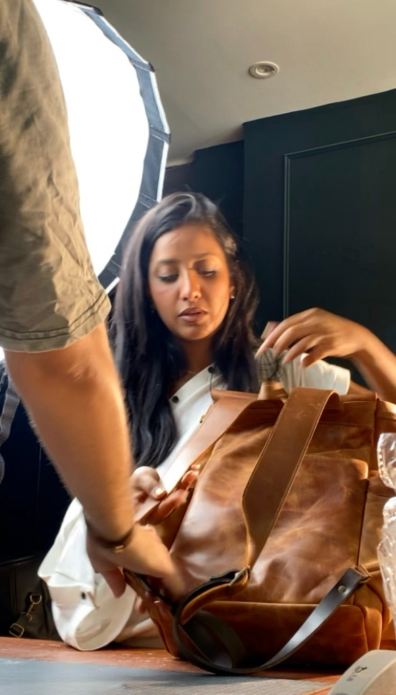
I’m always looking for a different way to see things.
I’m Salma El Hadidy, a creative director with a background in film. I’m drawn to ideas with character, emotion, and a strong visual point of view, the kind that make you stop for a second.
I’m especially drawn to fashion, lifestyle, and visual storytelling, where there’s room to experiment, build a world, and make something people actually want to look at.
Film taught me to think in scenes, not just images. How a frame feels, where the eye goes, when something should move, and when it should stay still.
It’s the foundation behind the way I approach creative direction today, building a mood, finding the story, and making every visual choice feel intentional.
Leading weekly shoots and shaping how the brand looks and feels, turning everyday products into stories, scenes, and ideas with personality.
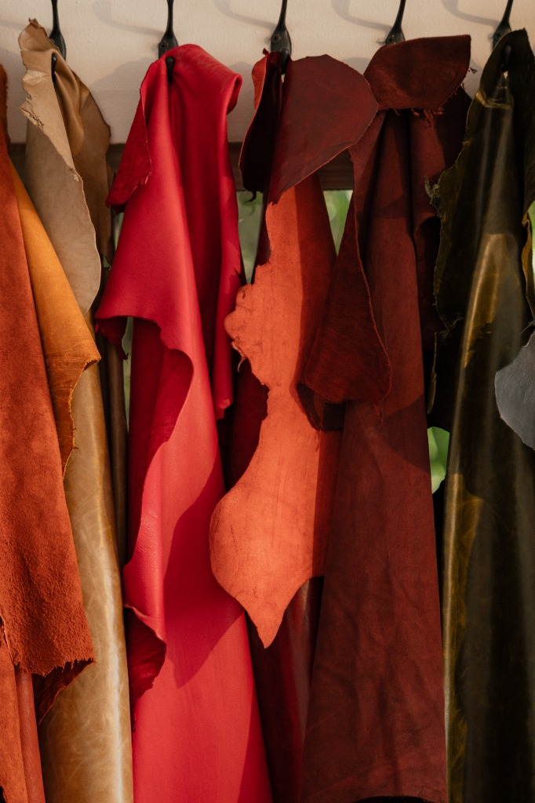
Weekly Shoot Direction & Brand Execution
A brand in motion
Quiet focus, caught in motion.
No posing, no performance, just people absorbed in what they’re doing.
SALMA’S CAMERA ROLL
I collect the things I want to remember, people caught in moments, places I love, and little details that somehow stay with me.
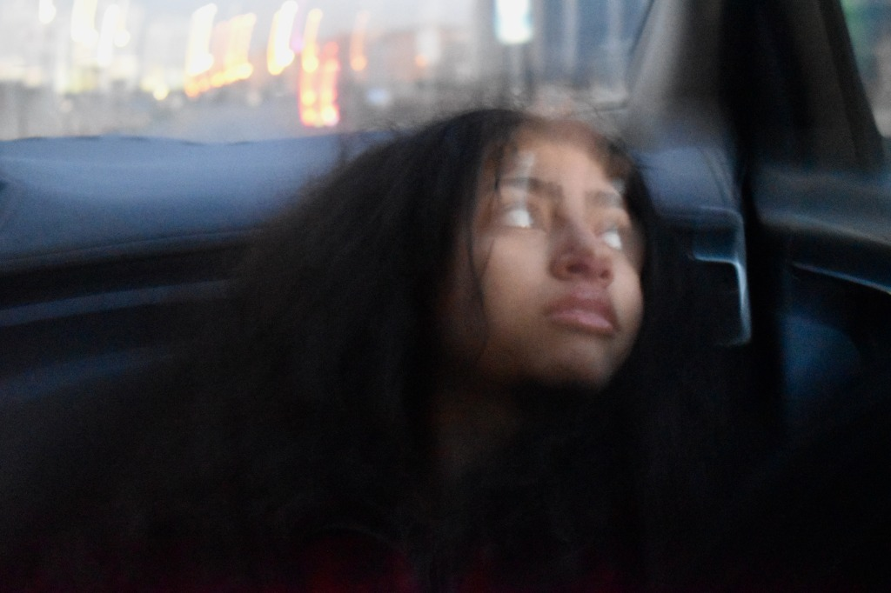
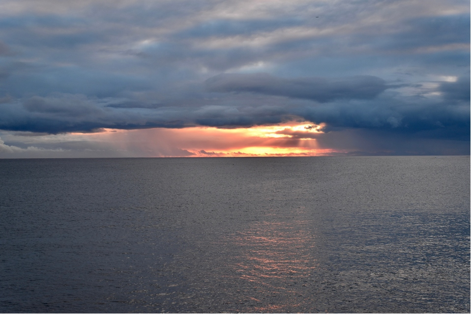
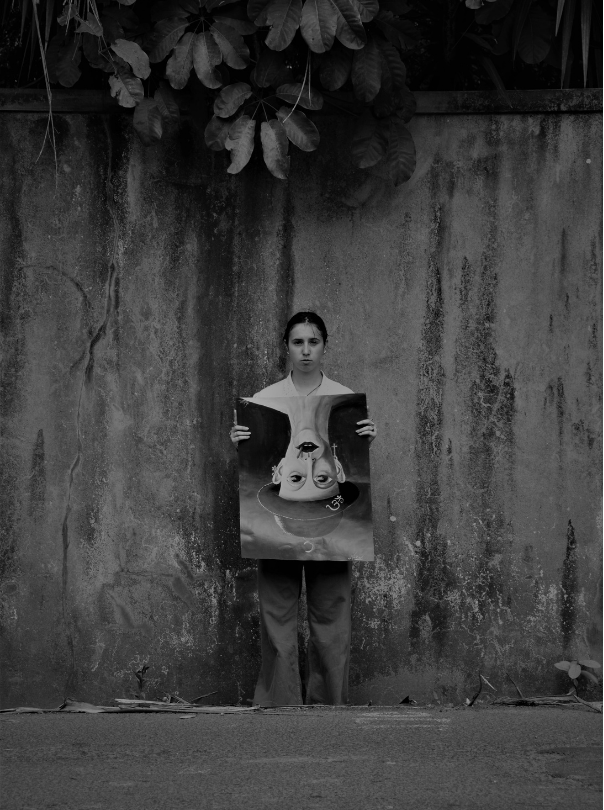
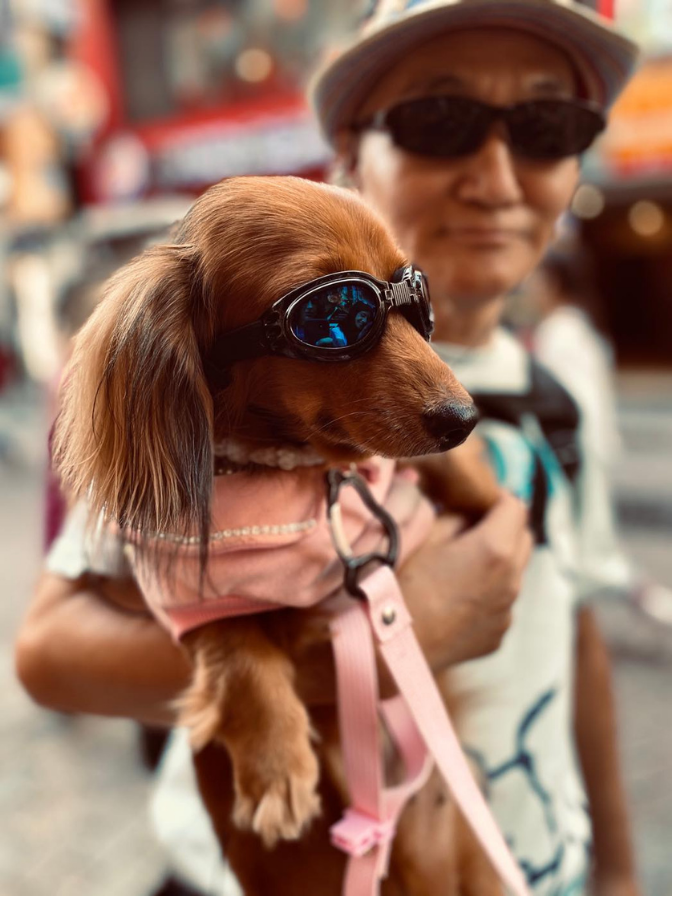
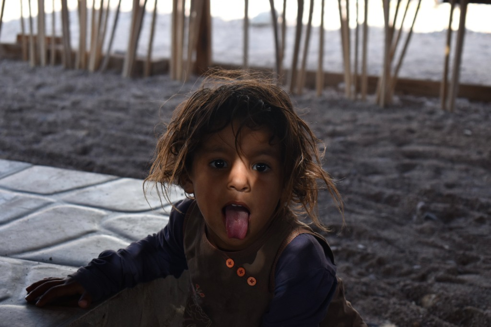
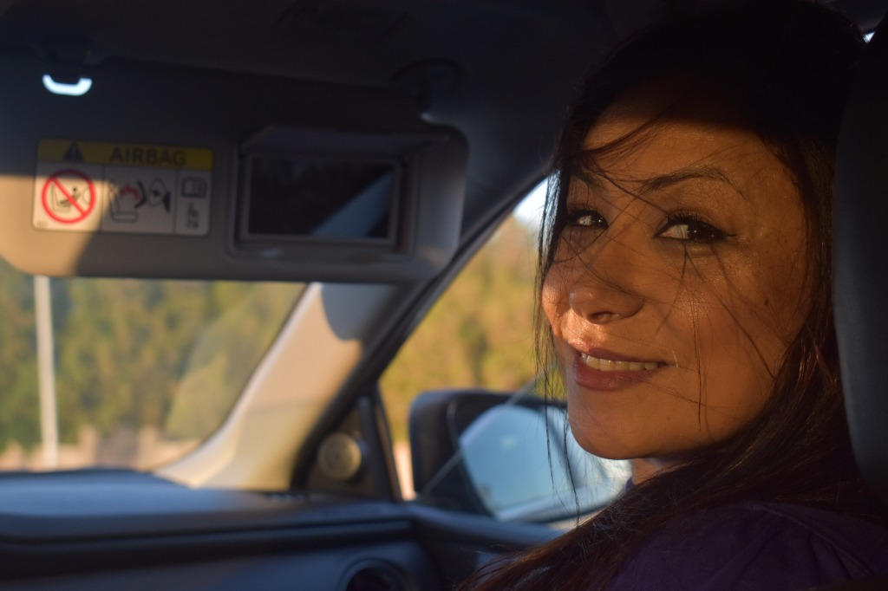
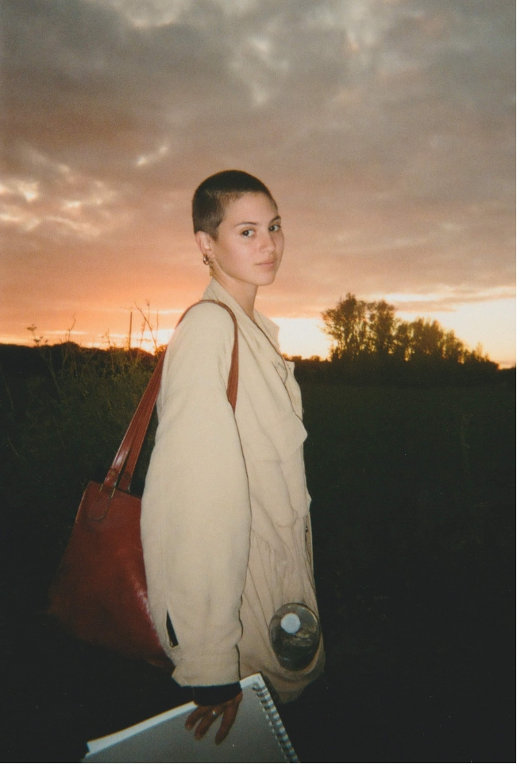
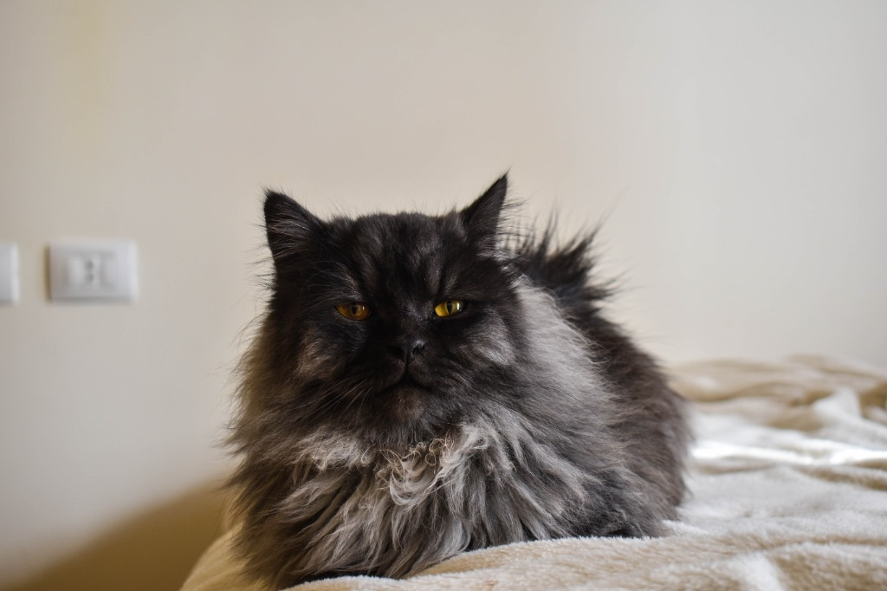
“I’m interested in the world around the product.”
I’m drawn to what happens before the frame, after it, and just outside of it.
- The person wearing the jacket.
- The room they just walked into.
- The music playing somewhere in the background.
- The glance that lasts a second too long.
I approach creative direction through story, atmosphere, movement, and emotion. The product matters, but I don’t always want it to be the loudest thing in the room. Sometimes, it’s simply part of a world you want to belong to.
I’m more interested in creating a scene than staging a product. Something with a mood, a point of view, and enough personality to make you look twice.
Because I don’t just want to make something look desirable.
I want to make you curious enough to stay.
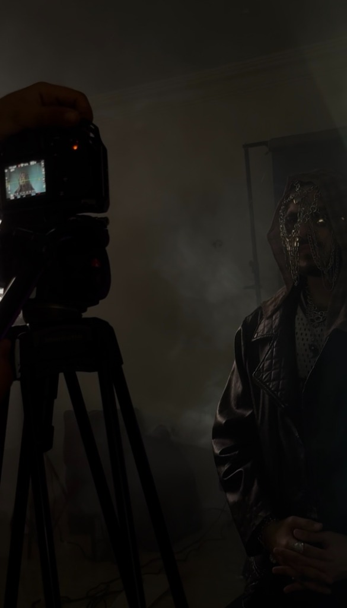